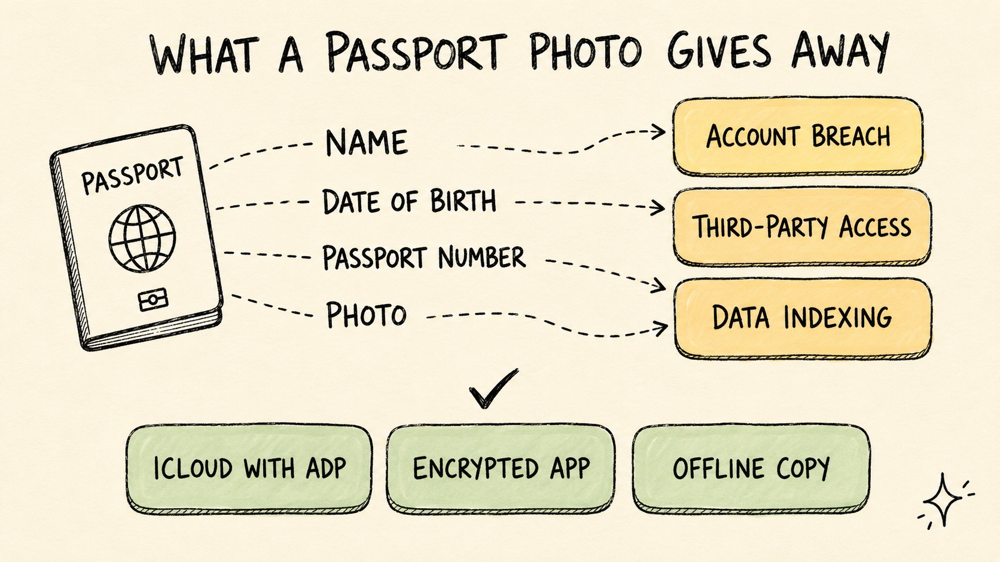

Is It Safe to Store Your Passport in Google Photos? What You Need to Know
Travel Document Vault

Key Takeaways
- Storing a passport scan in Google Photos means your identity document lives on Google's servers, processed by their systems, and guarded only by your account security.
- A compromised Google account - through phishing, password reuse, or a third-party breach - hands over every document in Google Photos. Including your passport.
- Google's terms permit automated scanning of your photos for features and service improvements. That includes images containing passport data.
- Better options exist: encrypted password managers, on-device encrypted apps, or client-side encrypted cloud storage - none of which dump your passport into a general photo library.
- For most people, the real risk isn't Google - it's weak account security and who else can get into that account.
Millions of people store passport scans in Google Photos without thinking twice. You need a copy, you take a photo, it backs up automatically. Done. The question of whether that's actually a smart move for your most sensitive identity document rarely comes up - until something goes wrong.
Google Photos isn't some shady operation. The risks of keeping identity documents in a general cloud photo library are real and worth understanding, so you can decide what trade-off you're comfortable with.
What Information Is Actually in a Passport Scan?
Before we talk risk, let's be specific about what's actually in a passport scan:
- Full legal name
- Date of birth
- Nationality and country of issue
- Passport number
- Issue and expiry dates
- Place of birth (in many passports)
- Your photograph
- The machine-readable zone (MRZ) - the two rows of text at the bottom that encode all of the above in a standard format
That's a lot of personal data in one image. Your name, date of birth, and passport number together are enough to attempt identity fraud, run a convincing phishing attack using your real details, or open credit in your name in some jurisdictions. The photo makes it even more useful to someone who shouldn't have it.
What Are the Actual Risks of Google Photos Storage?
The risks aren't really about Google doing something sinister. They're more mundane than that - and more likely.
Account compromise
Someone gets into your Google account - via phishing, a reused password from another breach, or just a weak password - and they have access to everything: every photo, every document, everything in Google Drive. This is the most likely real-world threat for most people, and it's exactly why passport photo security matters more than most people realise.
Shared access
Google accounts get shared more than you'd think - between partners, on family devices, with kids who know the PIN. Your passport scan sits in Google Photos, accessible from any signed-in device, so it's not a theoretical edge case - it happens all the time.
Third-party app access
How many apps have you connected to your Google account? Probably more than you remember. Some of those permissions extend to Google Photos. An app with Photos access can, in principle, read your digital passport copy - and you'd never know.
Automated content scanning
Google's privacy policy confirms that photos get processed by automated systems - face recognition, object detection, search indexing. Your passport scan goes through those same systems for search and feature detection. It's not a human reading your passport, and Google isn't doing anything nefarious, but your document data does leave your device and get analysed by third-party infrastructure.
Data breach at Google
Google has a strong security record, but no cloud provider can promise your data is breach-proof forever. For most photos, that's a fine trade-off - but for identity documents, some people reasonably want a setup where the data never touches a server at all.
What this means in practice
Say your Google account password was reused on a site that suffered a breach two years ago. You've forgotten about it. An automated tool tries that password against Google, and it works. In the next few minutes, everything in your Google Photos is accessible: holiday snapshots, screenshots, and your passport scan. The attacker now has your full legal name, date of birth, nationality, passport number, and your photo. That's enough to open a credit account in your name or run a targeted phishing attack that's hard to spot because it uses your real details. The account breach is the realistic threat, not Google itself.
What Is the Safest Way to Store a Passport Photo? Google Photos vs iCloud vs Dedicated Vault
| Storage Method | Data Location | Encryption | Risk Level | Verdict |
|---|---|---|---|---|
| Google Photos | Google cloud servers | In transit + at rest (Google-managed keys) | Moderate | Acceptable with strong 2FA |
| iCloud Photos | Apple cloud servers | In transit + at rest (Apple-managed keys) | Moderate | Acceptable with strong 2FA |
| Encrypted password manager (1Password, Bitwarden) | Cloud (zero-knowledge) | End-to-end; provider cannot read content | Low | Good choice |
| On-device encrypted app (optional own-cloud backup) | Your phone only | Encrypted on-device; no server copy | Lowest | Best for sensitive docs |
| Camera roll / unencrypted folder | Your device | Device encryption only | Higher | Not recommended |
iCloud Photos vs Google Photos: Is Apple Any Safer?
iOS users often assume iCloud is meaningfully safer than Google Photos for storing passport scans. At a structural level, they're very similar. Both store your photos on cloud servers managed by the provider, both encrypt data in transit and at rest using their own managed keys, and both process your images through automated systems for features like search and face recognition.
Apple's Advanced Data Protection (available in iOS 16.2+) does raise the bar - when enabled, it extends end-to-end encryption to iCloud Photos, meaning even Apple can't read your content. Still, it's not on by default, and most users don't know it exists.
The same account-compromise risk applies to both platforms. A weak Apple ID password is just as dangerous as a weak Google account password. Neither is designed specifically for storing high-sensitivity identity documents.
If you're an iPhone user, enabling Advanced Data Protection in iCloud is worth doing. A purpose-built encrypted app with no cloud upload remains the strongest option for passport storage regardless of which platform you're on.
Travel Document Vault stores your passport scans on-device with strong encryption. No account required. Optional encrypted backup to your own iCloud or Google Drive (Pro), sealed with a recovery code only you hold. Download on the App Store.

What Are the Safer Alternatives?
If you want a digital passport copy handy when you're travelling - as a backup if your physical passport gets lost or stolen - there are options that give you real security without much inconvenience.
Encrypted password managers
1Password and Bitwarden both let you store document scans as attachments. They use zero-knowledge encryption - the provider can't read your content even if they wanted to. Your documents get encrypted on your device before anything goes to their servers. That's a real step up from a general cloud photo library.
On-device encrypted apps
Apps built specifically for this - like Travel Document Vault - keep everything on your phone with strong encryption and no account required. You get optional encrypted backup to your own iCloud or Google Drive (Pro), and there's no server to breach because your digital passport copy never leaves the device. The one trade-off is that if you lose your phone without a backup, the digital copy goes with it, though your physical passport is still with you.
Encrypted cloud storage with client-side keys
Tresorit and Proton Drive offer client-side encryption for cloud storage. Like password managers, the provider can't read your files. You get cloud convenience with substantially stronger passport photo security than Google Photos.
Best Practices If You Continue Using Google Photos
Plenty of people will keep using Google Photos for this - the convenience is real. If that's you, these steps actually move the needle on risk:
- Turn on two-factor authentication. This is the single biggest thing you can do. Use an authenticator app, not SMS - SMS 2FA is better than nothing but easier to intercept.
- Use a strong, unique password for your Google account. Reusing passwords across services is how most accounts actually get taken over.
- Audit your third-party app permissions. Go to myaccount.google.com → Security → Third-party apps with account access, and cut anything that doesn't need to be there.
- Check your active devices and sessions. Remove anything you don't recognise.
- Create a private album for sensitive documents rather than leaving them loose in your main photo stream. It won't stop a breach, but it reduces accidental exposure when someone's looking over your shoulder.
For a broader look at keeping your travel documents organised and safe, check out our travel document tips on the blog - including a practical guide on how to organise family travel documents before your next trip.
Frequently Asked Questions
Is it safe to store a passport photo in Google Photos?
It's convenient, but Google Photos wasn't built for sensitive identity documents. Your scan lives on Google's servers, gets processed by their automated systems, and is protected by whatever security your Google account has. If your account gets compromised (through phishing, a reused password, or a data breach somewhere else), so does your passport scan. For a document this sensitive, a dedicated encrypted storage option is a smarter choice. If you do use Google Photos, turn on two-factor authentication and use a unique password on your Google account.
Does Google scan the contents of photos stored in Google Photos?
Yes. Automated systems process your photos for things like face recognition, object detection, and search indexing. Google's privacy policy also allows content to be used to improve their services. No human is reading your passport - but your document data is processed by Google's infrastructure, not just sitting inert on a server.
What is the safest way to store a digital copy of a passport?
On-device encrypted storage is your safest bet - apps that keep your scans on your phone with strong encryption and zero cloud upload. No third-party server ever touches your passport data. If you want cloud access too, a zero-knowledge encrypted password manager like 1Password or Bitwarden is a solid middle ground.
Can someone steal my identity from a passport scan?
Yes, realistically. Your name, date of birth, nationality, passport number, and expiry date together are enough to attempt identity fraud, apply for credit in your name, or run a very convincing phishing attack. The risk goes up if that data gets combined with other personal details from separate breaches - which happens more than most people expect.
Is iCloud safer than Google Photos for storing passport scans?
At a structural level, they're very similar. Both store photos on cloud servers managed by the provider and both process images through automated systems. Apple's Advanced Data Protection (iOS 16.2+) extends end-to-end encryption to iCloud Photos when enabled, which does raise the bar meaningfully - but it's off by default and most users haven't turned it on. The bigger factor for both platforms is your account password and whether two-factor authentication is active. For passport storage specifically, a dedicated on-device encrypted app remains the stronger option on either platform.